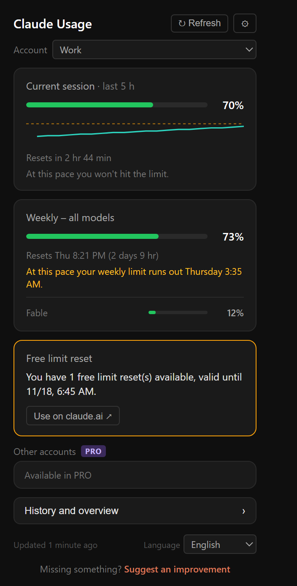

/usage in Claude Code per vedere l'utilizzo del tuo piano e cosa lo sta consumando. Sessioni lunghe, contesto ampio, subagent e server MCP consumano il limite più in fretta; /clear, un modello più leggero e prompt specifici fanno risparmiare di più.
Quando accedi a Claude Code con il tuo abbonamento claude.ai, tutta l'attività in Claude Code, nella chat di claude.ai, in Claude Desktop e nelle estensioni per IDE (VS Code, JetBrains) conta su un unico insieme di limiti condivisi:
| Piano | Limiti che valgono per Claude Code |
|---|---|
| Pro | Limite di sessione di 5 ore + limite settimanale |
| Max | 5× Pro, ogni 5 ore e ogni settimana; in più un limite settimanale separato per il modello più grande |
| Ultra | 10× Pro ogni settimana; gli account verificati non hanno il limite di 5 ore; limite settimanale separato per il modello più grande |
Quindi una mattinata di programmazione intensa può lasciarti poco margine per chattare nel pomeriggio, e viceversa. Per un confronto completo dei piani leggi Claude Pro vs Max vs Ultra.
Attenzione alle chiavi API: se è impostata la variabile d'ambiente ANTHROPIC_API_KEY, Claude Code usa quella chiave al posto del tuo abbonamento, e ogni richiesta la paghi a prezzi API.
/usage: mostra le barre di utilizzo del tuo piano e cosa le sta consumando, voce per voce: skill, subagent, plugin e singoli server MCP, con suggerimenti come accorciare un CLAUDE.md troppo grande. Premi d / w per passare dalle ultime 24 ore agli ultimi 7 giorni./usage si basa solo sulla cronologia delle sessioni locali del computer che stai usando./context: mostra cosa occupa in questo momento la finestra di contesto.CLAUDE.md grande e tanti server MCP: vengono caricati nel contesto a ogni sessione./clear tra un'attività e l'altra quando non sono correlate. Il contesto ormai inutile viene rinviato a ogni messaggio. Usa prima /rename se vuoi riprendere la sessione in seguito con /resume./compact per le attività lunghe che vuoi continuare: riassume la conversazione (è già di per sé una richiesta pesante, quindi non eseguirlo ogni pochi minuti)./model e abbassa /effort per le attività semplici.CLAUDE.md (sposta le istruzioni specialistiche nelle skill) e disattiva con /mcp i server MCP che non usi.Altre cause e soluzioni, anche per la chat di claude.ai, le trovi in Perché il limite di utilizzo di Claude finisce così presto?
/usage-credits) puoi continuare a lavorare pagando l'utilizzo extra, fino a un tetto mensile che imposti tu.
Usage Meter for Claude è un'estensione gratuita per il browser che tiene il tuo utilizzo di Claude sull'icona nella barra degli strumenti, compreso l'utilizzo da Claude Code. Il popup mostra i limiti di sessione e settimanali con gli orari di azzeramento e una previsione di quando li esaurirai al ritmo attuale, e ricevi una notifica prima di raggiungere il limite. Ideale per decidere se avviare quel refactoring adesso o dopo l'azzeramento.
Funziona con Claude Pro, Max e Team. Allo sviluppatore non viene inviato nulla: i tuoi dati restano nel tuo browser.
No. Con un abbonamento Pro, Max o Ultra, Claude Code condivide con claude.ai e Claude Desktop gli stessi limiti: la sessione di 5 ore e il limite settimanale.
Esegui /usage. Mostra l'utilizzo del tuo piano e cosa lo sta consumando. Per l'utilizzo su tutti i tuoi dispositivi, controlla Settings → Usage su claude.ai.
Ogni richiesta porta con sé l'intera conversazione più i risultati degli strumenti, e subagent, server MCP e sessioni lunghe aggiungono altro. Pulire il contesto tra un'attività e l'altra e usare modelli più leggeri è ciò che aiuta di più.
Non per il limite di sessione o quello settimanale: valgono per tutti i modelli. Aiuta solo se hai raggiunto un limite settimanale specifico di un modello.
Sì, se sul tuo piano a pagamento hai attivato i crediti di utilizzo: paghi l'utilizzo extra fino a un tetto mensile che imposti tu. Altrimenti devi aspettare l'azzeramento.
Fonti (in inglese): documentazione di Claude Code – Manage costs effectively; Centro assistenza di Claude – Use Claude Code with your Pro, Max or Ultra plan, How do usage and length limits work?.